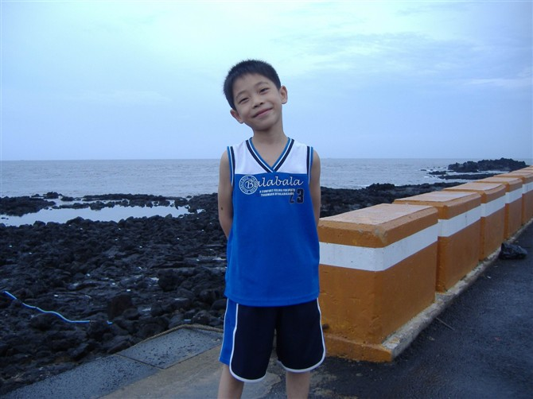
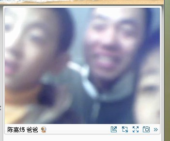

哥不是一个传说！其实是寂寞！这是他--炜哥的个性签名。接下来介绍的是我的第二朵金花--陈嘉炜。看他的游戏心语就令人震撼了，孩子才11岁。
可以这么说吧，嘉炜比较早熟，从第一天跟我学棋，就没生疏过，能言善辩，口若悬河，俺说一句，他至少也说一句半吧。嘉炜父母工作比较忙，常在外应酬，而他，很懂事，也很懂生活。比如自己打电话叫个咖喱牛肉饭什么的，从不让父母担心。嘉炜也很调皮，以前一段时间，他上课时总请假说要上厕所，而且总是大的，令我哭笑不得。继而改正了。但从不认真上课，我几乎每次上课总能从麦的这头闻到他那边在吃东西。说实话，那香味诱人。一次我由于家里菜不好吃，晚餐只胡乱吃了一点，就上课。而语音另一边传来香味和滋滋声，我实在忍不住就问了声：“嘉炜在吃什么呀？”“烤鸡，小刀老师想吃吗？”“哦，赶紧吃了好好下棋。”其实我能不想吗？暗暗吞了吞口水，我还没吃过烤鸡。从此，吃烤鸡成了我的一桩心愿。
嘉炜是个好奇心很强的家伙，一次我说把周日的课从晚上调到早上上，因为我下午要去表姐家。那头的炜哥沉思片刻，答应了，但立刻刨根追底的问我要去哪里，去做什么。当我告诉他是表姐生病了，我要去看看她，第二天下午才能回来。我感到嘉炜有几分不放心我，也有几分不愿和不舍。“小刀老师，你早点回来好吗？”呵呵，真是一个小大人！
当我告诉嘉炜，我看了电影阿凡达之后，嘉炜很不屑，我过2天也去看。后来再一次上课中途，我听见他打电话给他同学，说第二天去看阿凡达，问他同学能否带上他的弟弟大卫，当电话那头同学说AA制，一人出一百，嘉炜考虑了：“这么贵呀，那以后再说吧。”我知道嘉炜家里条件很好，也有钱，他父母还带他去了韩国玩耍，但这件事我真的发现嘉炜很懂事，不仅对他刮目相看。
说到嘉炜的棋，那真二个字：头痛。娃娃非常之聪明，可就是做啥也不认真。下棋认真想呢，下得比我好多下了1，2年的徒弟还强。但很少认真。问了他母亲，他在学校成绩还是很好，但也是比较大意，希望他能改掉马虎的坏毛病，那就会非常帅了。
一次在上课的时候，我说：“嘉炜，我想看看你可以吗？”那边发来了视频。镜头前赫然出现了3个小年轻：

除了嘉炜，另2个是谁呢？